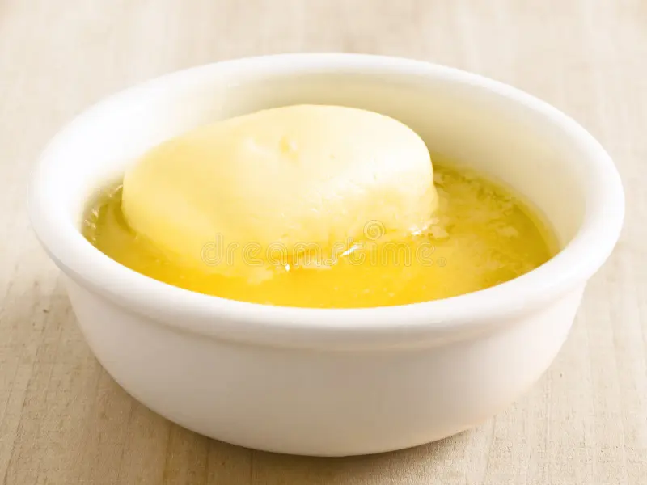
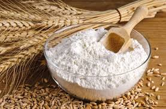

*Mantquilla para engrasar la sárten


Instrucciones:
- En la licuadora agregar todos los ingredientes y mezclar hasta obtener una mezcla uniforme.
- Refrigera la mezcla por 3 horas.
- Calienta la sartén a fuego medio y coloca un poco de mantequilla para engrasarla.
- Vierte una pequeña cantidad de la mezcla en la sartén y extiéndela para formar una capa delgada.
- Cocina la crepa durante 1-2 minutos o hasta que los bordes comiencen a dorarse, luego voltéala y cocina el otro lado por 1-2 minutos más.
- Retira la crepa de la sartén y reserva.
- Repite el proceso con el resto de la mezcla, asegurándote de engrasar la sartén entre cada crepa.
Sugerencias para servir:
Puedes rellenar las crepas con frutas frescas, mermelada, Nutella o cualquier otro ingrediente de tu elección.
¡Disfruta de tus deliciosas crepas caseras!